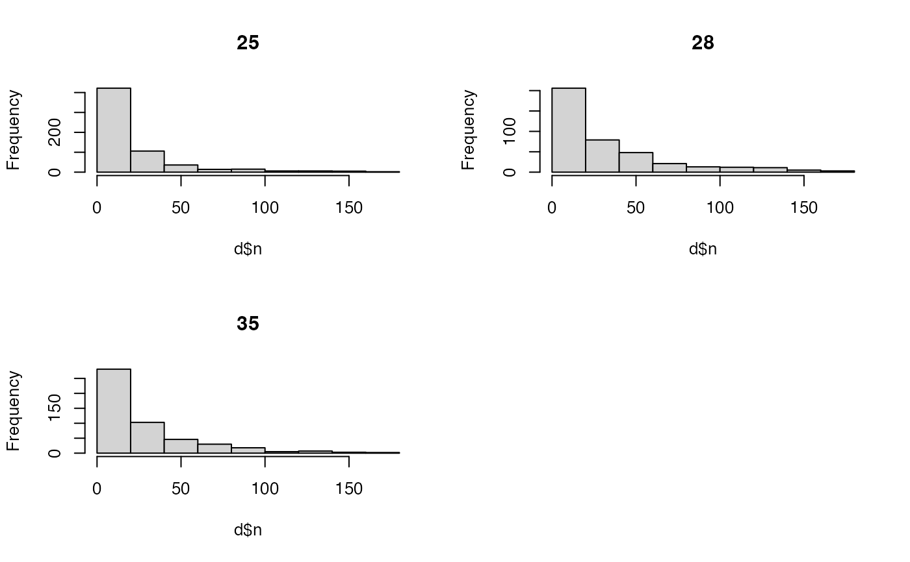
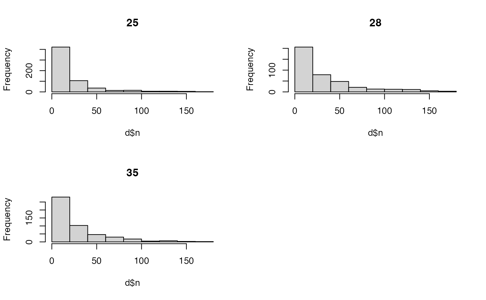

This function calculates centres of activity (COAs) from detections at acoustic receivers.
Usage
coa(
.map,
.detections,
.moorings = NULL,
.delta_t,
.split = NULL,
.plot_weights = TRUE,
...,
.one_page = TRUE
)Arguments
- .map
A
terra::SpatRasterthat defines the study area (seeglossary). Here,.mapis used to:Extract
map_valueat centres of activity, for consistency with other routines (such aspf_filter());
- .detections, .moorings
Acoustic detection
data.table::data.table..detectionsis adata.table::data.tableof acoustic detections, with the following columns:receiver_id(orsensor_id),timestampand (optionally)receiver_xandreceiver_ycolumns;(optional)
.mooringsis adata.table::data.tableof receiver coordinates, which should be provided if unavailable in.detections, withreceiver_id,receiver_xandreceiver_ycolumns;
Receiver coordinates must be planar.
- .delta_t
The time interval over which to calculate COAs. This can be specified in any way understood by
lubridate::floor_date()(see theunitargument).- .split
(optional) A
characterthat defines the name of the grouping factor in.detections(e.g.,individual_idfordat_detections).- .plot_weights, ..., .one_page
Plot arguments.
.plot_weightsis alogicalvariable that defines whether or not to plot the frequency distribution of weights for each.splitvalue (i.e., the frequency distribution of the number of detections at each receiver in each time interval, excluding time intervals without detections)....is a placeholder for arguments passed tographics::hist(), excludingmain..one_pageAlogicalvariable that defines whether or not to plot all histograms on one page.
Value
The function returns a data.table::data.table with the following columns:
{.split}—acharactervector that distinguishes groups, if applicable;timestep—anintegervector of time steps;timestamp—aPOSIXtvector of time stamps;map_value,x,y—the value of.mapat COAs and their coordinates;
Data are arranged by .split and timestamp.
Details
COAs are calculated as a weighted mean of the locations of receivers at which individuals are detected over consecutive time intervals, weighted by the frequency of detections at each of those receivers. COAs are calculated via stats::weighted.mean(), which assumes planar coordinates, for consistency with other patter routines. To handle longitude/latitude coordinates, use geosphere::geomean().
This function replaces flapper::coa(). See flapper::coa_setup_delta_t() to evaluate alternative time internals.
On Linux, this function cannot be used within a Julia session.
See also
To derive location samples from a particle filtering algorithm, see
pf_filter()and associates;For mapping utilisation distributions from coordinates, see
map_*()functions (i.e.,map_pou()andmap_dens());
Examples
if (patter_run(.julia = FALSE, .geospatial = TRUE)) {
library(data.table)
#### Set up example
map <- dat_gebco()
detections <- dat_detections
moorings <- dat_moorings
#### Example (1): Calculate COAs for an example individual
id <- dat_detections$individual_id[1]
det <- dat_detections[individual_id == id, ]
coa(.map = map, .detections = det, .moorings = moorings,
.delta_t = "2 hours")
#### Example (2): Customise the time interval via `.delta_t`
coa(.map = map, .detections = det, .moorings = moorings,
.delta_t = "4 hours")
#### Example (3): Calculate COAs for multiple individuals via `.split`
# Calculate COAs
coa(.map = map, .detections = det, .moorings = moorings,
.delta_t = "6 hours", .split = "individual_id")
# Use one page for plots via `.one_page = TRUE`
coa(.map = map, .detections = det, .moorings = moorings,
.delta_t = "6 hours", .split = "individual_id",
.one_page = FALSE)
# Suppress plots via `.plot = FALSE`
coa(.map = map, .detections = det, .moorings = moorings,
.delta_t = "6 hours", .split = "individual_id",
.one_page = TRUE)
#### Example (4): Specify `.detections` only
# `.moorings` is not required if `.detections` contains receiver coordinates
coa(.map = map,
.detections =
detections |>
merge(moorings, by = "receiver_id"),
.delta_t = "6 hours", .split = "individual_id")
}


 
#> individual_id timestep timestamp map_value x y
#> <int> <int> <POSc> <num> <num> <num>
#> 1: 25 1 2016-03-17 00:00:00 59.76520 709120.1 6253030
#> 2: 25 2 2016-03-17 06:00:00 49.72233 709398.4 6253169
#> 3: 25 3 2016-03-21 18:00:00 58.17422 709242.1 6253107
#> 4: 25 4 2016-03-22 00:00:00 58.17422 709242.1 6253107
#> 5: 25 5 2016-03-22 06:00:00 58.17422 709242.1 6253107
#> ---
#> 1204: 35 402 2017-04-10 18:00:00 99.90396 709048.8 6253427
#> 1205: 35 403 2017-04-11 18:00:00 49.51562 706342.1 6254307
#> 1206: 35 404 2017-04-12 00:00:00 117.36553 707042.1 6253840
#> 1207: 35 405 2017-04-12 18:00:00 113.60658 708771.2 6253210
#> 1208: 35 406 2017-04-19 18:00:00 129.77667 707242.1 6253707

#> individual_id timestep timestamp map_value x y
#> <int> <int> <POSc> <num> <num> <num>
#> 1: 25 1 2016-03-17 00:00:00 59.76520 709120.1 6253030
#> 2: 25 2 2016-03-17 06:00:00 49.72233 709398.4 6253169
#> 3: 25 3 2016-03-21 18:00:00 58.17422 709242.1 6253107
#> 4: 25 4 2016-03-22 00:00:00 58.17422 709242.1 6253107
#> 5: 25 5 2016-03-22 06:00:00 58.17422 709242.1 6253107
#> ---
#> 1204: 35 402 2017-04-10 18:00:00 99.90396 709048.8 6253427
#> 1205: 35 403 2017-04-11 18:00:00 49.51562 706342.1 6254307
#> 1206: 35 404 2017-04-12 00:00:00 117.36553 707042.1 6253840
#> 1207: 35 405 2017-04-12 18:00:00 113.60658 708771.2 6253210
#> 1208: 35 406 2017-04-19 18:00:00 129.77667 707242.1 6253707